“200 kg. 42.2 km. You can’t outrun your past—but you can choose what weight to carry.”
200公斤。42.2公里。你无法逃避过去，但你可以选择背负怎样的重量前行。
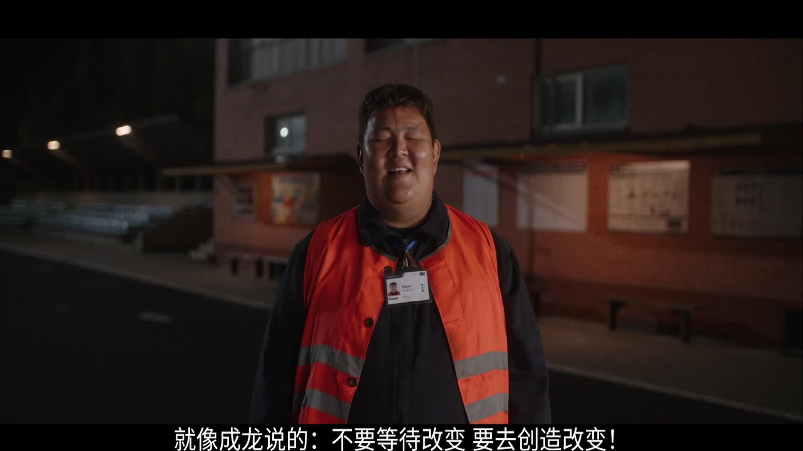
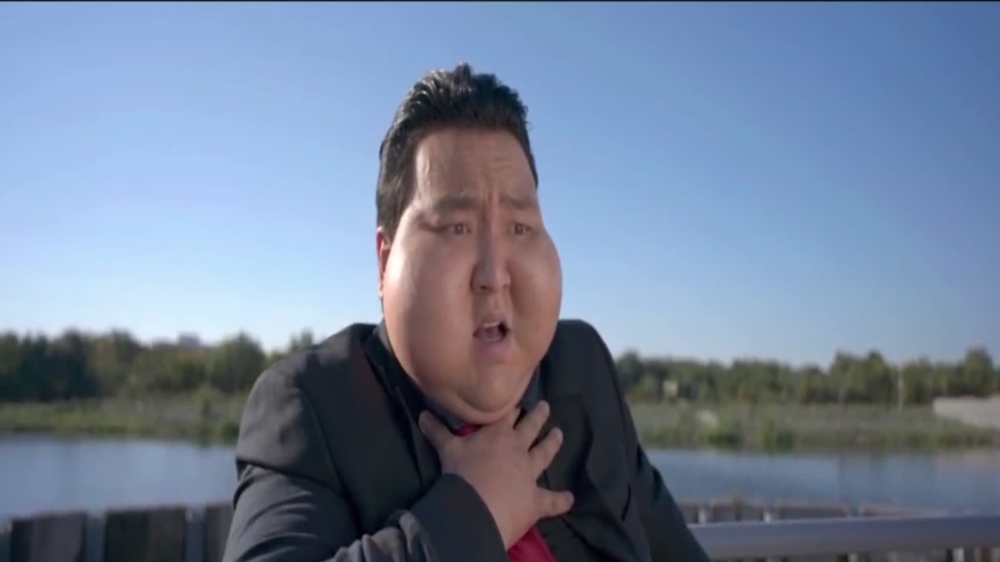
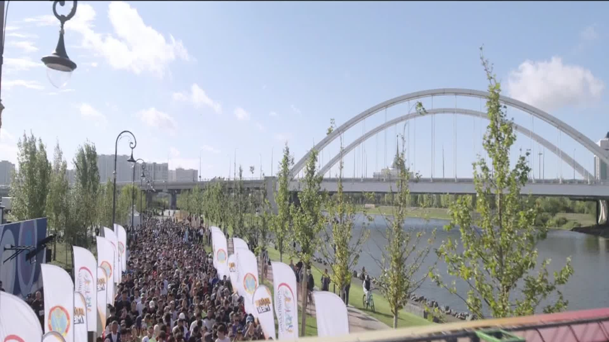
A 200-kg invisible stadium janitor accidentally causes a runner’s death, steals his identity, enters a strict weight-loss camp to run the Astana Marathon, and discovers his “hero” was a con man—ultimately running not to impersonate a dead man, but to save a life and reclaim his own soul.
The emotional weight-loss transformation of “YOLO” (《热辣滚烫》) meets the gripping redemption arc of “The Whale” (《鲸》) and the kinetic underdog drive of classic Hong Kong action cinema.
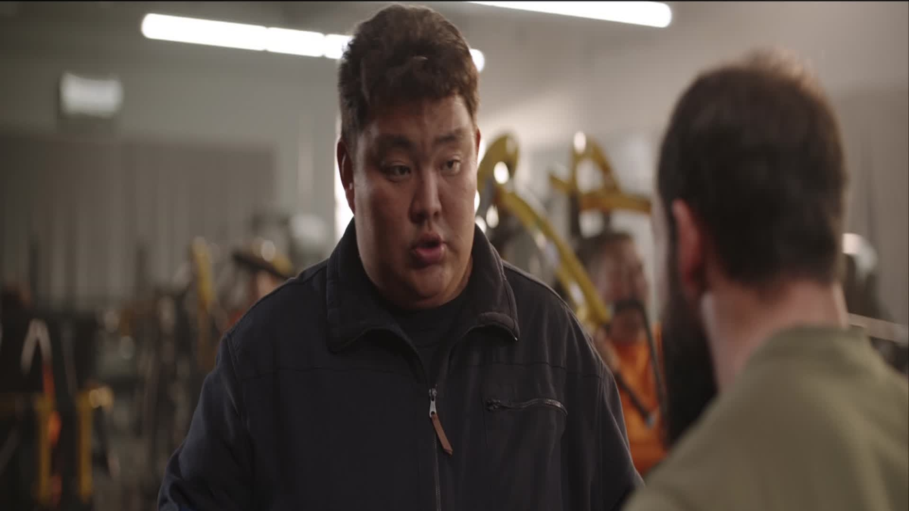
In NOT EXTRA, severe obesity is portrayed not as a punchline, but as emotional armor built around childhood trauma and silent shame. Through grueling athletic discipline, brotherhood, and honest self-reflection, our protagonist learns to love and respect himself.
This mirrors the exact psychological and inspirational wave that propelled “YOLO” (《热辣滚烫》) to a RMB 3.4+ billion box-office phenomenon in China: “You only live once—win just once for yourself.”
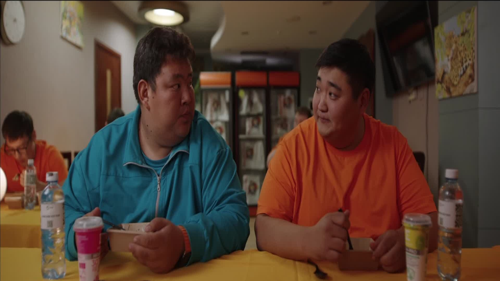
Inside Rasul’s cramped under-stadium room, faded posters of Jackie Chan (成龙) and Bruce Lee (李小龙) cover the concrete walls. Likewise, the training diary that guides Rasul is filled with classic aphorisms from 1980s Hong Kong martial arts cinema (“Be like water”, “Don’t wait for change—create change”).
For Chinese audiences, this creates an immediate, heartwarming cultural bridge—showing how classic Chinese-language cinema inspired a generation across Central Asia to never surrender.
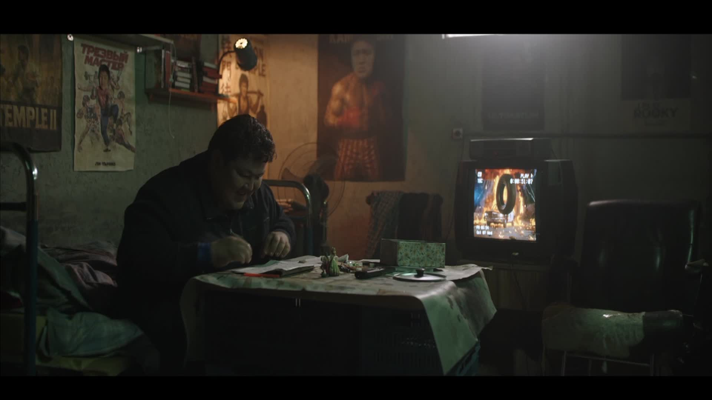
Lead actor Ersultan Uais underwent an actual, medically supervised weight-loss and athletic conditioning regimen inside the real JANA MEN rehabilitation camp during production.
There are no fake fat-suit CGI cheats for the core emotional journey: every drop of sweat, heavy breath, muscle tremor, and physical milestone on screen is 100% authentic, supported by real JANA MEN alumni who collectively shed over 1,500+ kg.
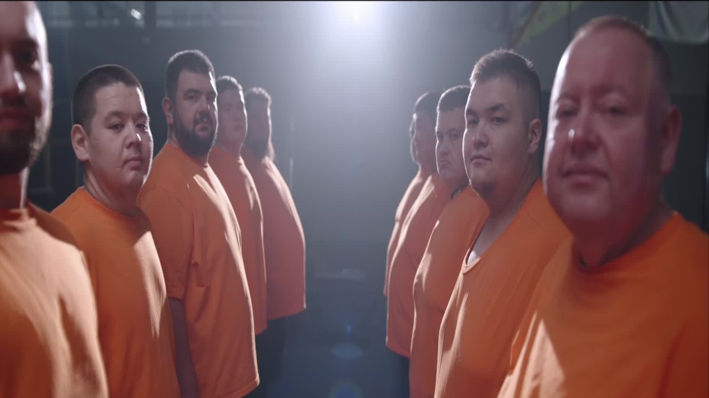
Rather than staging a small crowd on a closed backlot, the entire Third-Act climax was embedded directly into the live Astana Marathon among thousands of real runners.
Multi-camera Steadicam and DJI Ronin 4D units ran alongside the actors inside the actual race stream—delivering breathtaking big-screen scale, kinetic urgency, and documentary-level immersion.
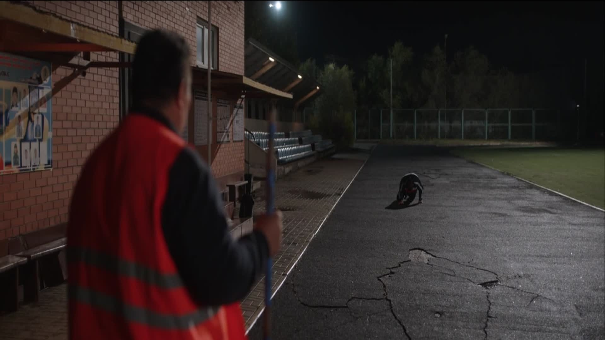
The film opens with a sunlit dream on Astana’s bridge before morphing into reality: Rasul, a 200-kg illiterate stadium janitor living in a claustrophobic room lined with Jackie Chan posters.
At night on the stadium track, runner Artyom collapses from asthma. Rasul rushes to help, trips over his untied shoelaces, and accidentally crushes Artyom’s inhaler. Panicked, Rasul takes Artyom’s backpack, SOS watch, and training diary, fleeing to Astana.
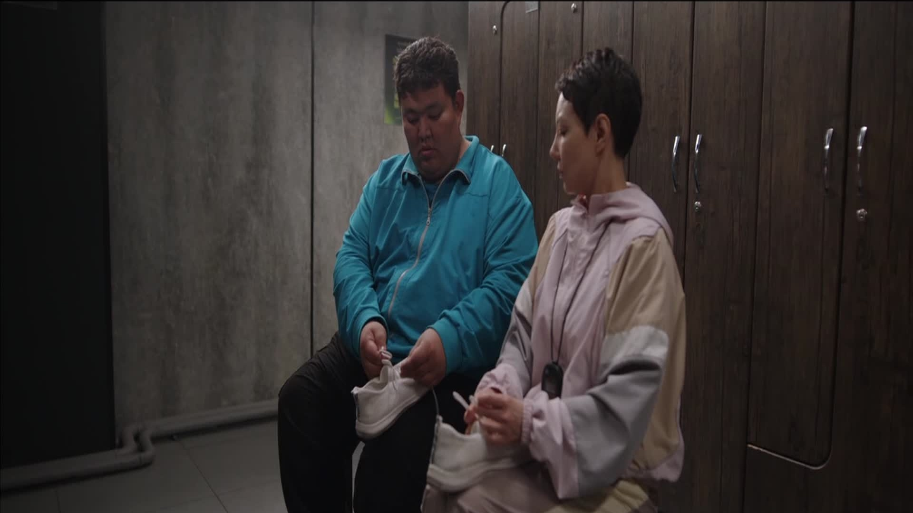
Assuming the alias “Sultan”, Rasul enters the strict “Not Extra” (JANA MEN) weight-loss camp led by mentor Aitym and administrator Elvira. Aitym confronts him with brass scales—proving hidden fear weighs more than fat.
Elvira shows Rasul his first maternal kindness, teaching him how to tie a secure double-knot and write his first letters. Through grueling workouts and brotherhood among the camp’s heavy men, Rasul breaks his physical and mental barriers.
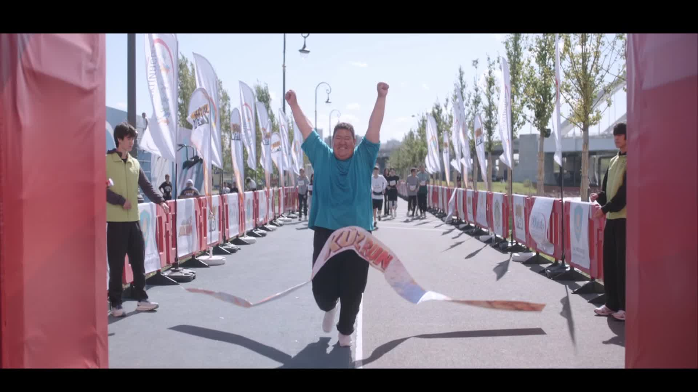
On the eve of the race, Artyom’s daughter Yulia arrives and shatters Rasul’s idol: Artyom was actually a disgraced con man whose heroic diary was a fabrication written to win her forgiveness.
Refusing to surrender, Rasul enters the 42.2 km Astana Marathon under bib #261. Just 10 meters from the finish arch, Rasul turns his back on the finish line and walks backward against the crowd to save Yulia from a fatal asthma attack with an inhaler—reclaiming his own soul.
A 200-kg gentle giant and stadium janitor who locked his childhood trauma inside a fortress of weight. Stepping onto the marathon track under a borrowed name, he sheds his protective armor to find his true voice.
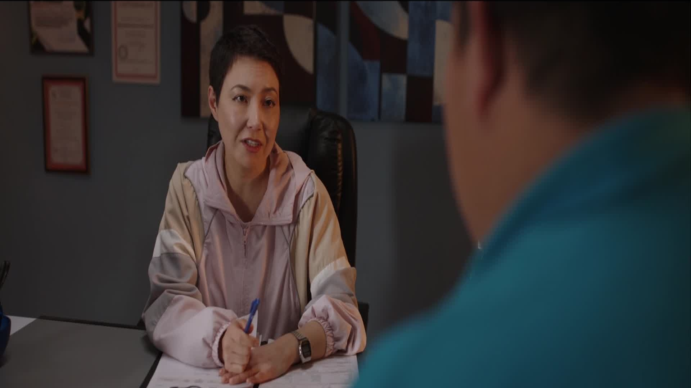
The strict, military-postured administrator of the “Not Extra” camp. Guarding her own unspoken personal grief, she becomes Rasul’s human anchor—teaching him to tie his shoelaces, read, and trust again.
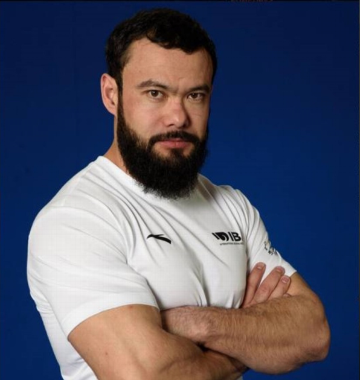
Real-life founder of the JANA MEN movement portraying himself. A relentless strategist of human willpower who strips away self-pity and performs “spiritual surgery” with his brass scales.
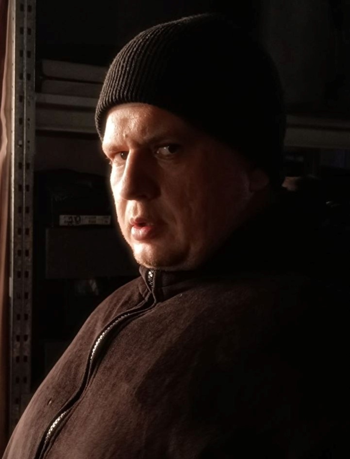
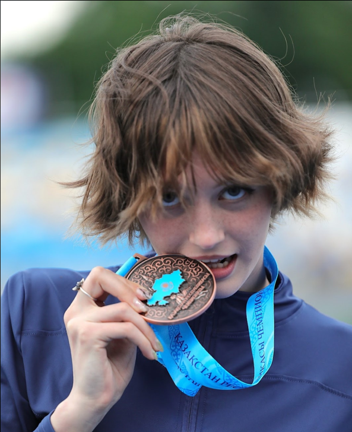
Artyom is the flawed ex-con runner whose diary sparks Rasul’s journey; Yulia is his estranged marathon-running daughter whose life Rasul saves at the finish line. Supported by Kazakh legends Dulyga Akmolda & Yerbolat Toguzakov.
Act I (Isolation): Cold, desaturated slate-grey and industrial concrete (#090D16) inside the stadium bowels, punctured only by Rasul’s high-visibility orange janitor vest.
Act II (Awakening): Warm kinetic pulses of JANA MEN orange (#F97316) and brass highlights inside the training center.
Act III (Liberation): Electric marathon blue (#0284C7) and open sunlit horizons as Rasul runs under bib #261 through the heart of modern Astana.
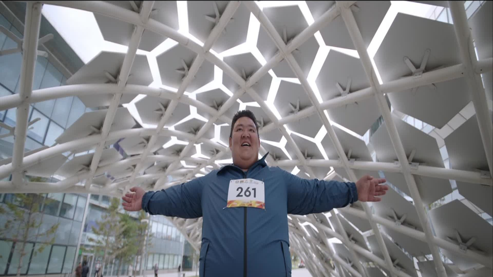
Designed by award-winning Sound Director Evgeny Fetisov, the film’s audio architecture places the audience directly inside a 200-kg body fighting for every meter:
• Biometric SOS Metronome: Artyom’s smartwatch alarm (155 → 188 BPM) drives the rhythmic editing pace of the training and marathon sequences.
• Tactile ASMR Detail: Heavy respiratory rhythms, shoelaces tightening, brass scales balancing, and rubber soles striking wet tartan.
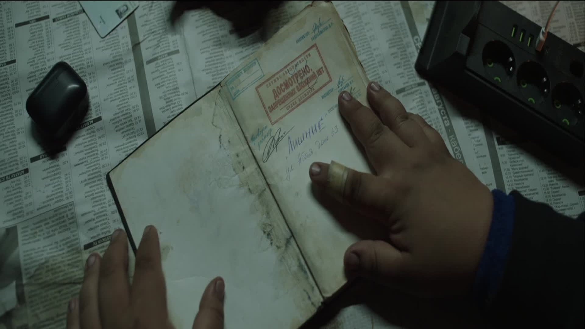
Founder of the IBA JANA MEN movement and ideological cornerstone of the film. His real-life transformation ecosystem provides both the story’s authenticity and a massive built-in media reach.
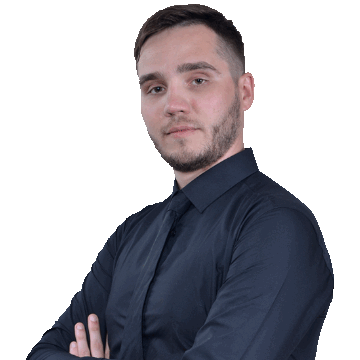
Showrunner, Lead Producer, and Co-Writer (Big Movie Studio). Original concept creator overseeing over 60 film/commercial productions, physical effects, and international co-distribution strategy.
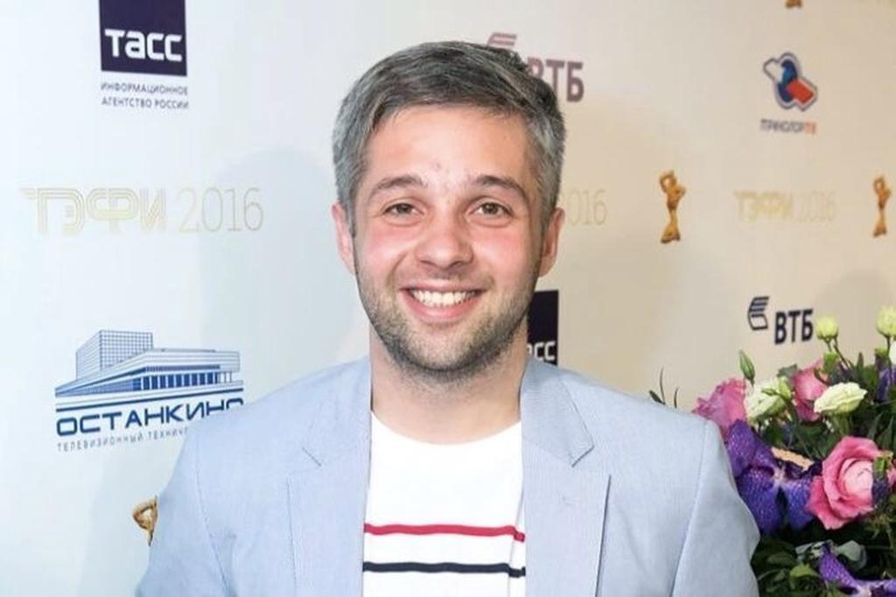
Acclaimed screenwriter and creative producer behind the blockbuster weight-loss comedy-drama “I Am Losing Weight” (《我是如何减肥的》), “Tolya-Robot”, and “Fizruk”. Master of crowd-pleasing emotional cinema.
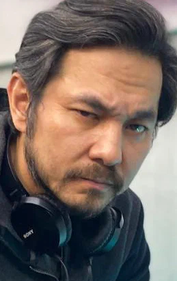
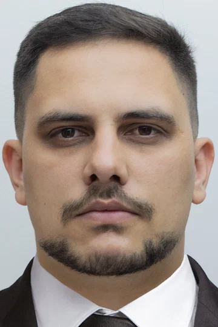
Director Rasul Sharafeddinov (“The Debtor”, “Inkar”) teams up with international DP & Producer Mikhail Siryanov (“DOMM”, “Blue Escape”, “KoKe”) and Executive Producer Bakhytzhan Kunshashova.
The current 3-minute promo reel with Chinese subtitles (provided for early buyer review) is an early rough-cut assembly utilizing temporary reference music (temp track) and pre-DI color.
Final theatrical orchestral & electronic score, full CGI prologue morphing, and theatrical sound mixing are currently in active production for Spring 2027 delivery.
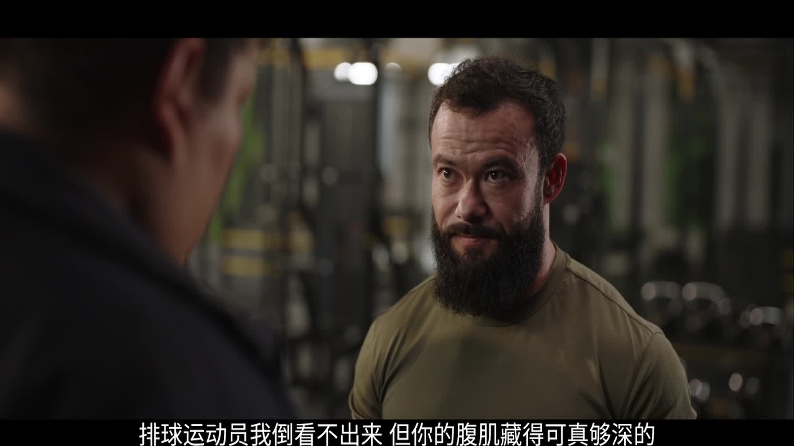
The production has officially secured the adaptation rights to legendary singer-songwriter Murat Nasyrov’s timeless hit “Ya Eto Ty” (《Я это ты》 / “I Am You” / 《我是你》)—creating a soaring emotional anthem for the film’s climax.
Opportunity to co-produce and record an exclusive Mandarin Chinese / Bilingual version of the theme song performed by Dimash Qudaibergen (迪玛希)—who commands a massive fanbase across Mainland China—or in duet with a top Chinese vocal star for nationwide Douyin, Weibo, and theatrical promotion.
• Principal photography 100% wrapped in Astana.
• Full narrative Rough Cut assembly in active review.
• Private rough-cut screener & 3-minute Chinese-subtitled promo reel available for accredited Chinese buyers and partners.
• High-precision VFX morphing (Act I bridge sequence).
• Recording of original score & flagship “Ya Eto Ty” adaptation.
• DaVinci Resolve theatrical DI color grading.
• Final 5.1 / Dolby Atmos theatrical sound mix & M&E stems preparation.
• Full delivery of unencrypted/encrypted 4K DCP.
• Complete English & Simplified/Traditional Chinese subtitled masters and dialogue lists.
• Complete censorship & import documentation package.
• International premiere & wide theatrical release (March–May 2027).
Territories Open:
• Mainland China (中国大陆)
• Hong Kong SAR & Macau SAR (中国香港、中国澳门)
• Taiwan Region (中国台湾)
Available Windows & Channels:
• Theatrical Rights (院线发行权): Quota / Revenue-sharing or Flat-fee import.
• Digital / VOD / SVOD / TV (新媒体与电视版权): Major Chinese streaming platforms & broadcast channels.
• Ancillary & In-Flight Rights (衍生及航空版权): Airline, educational, and non-theatrical exhibition.
At the current Rough Cut stage (粗剪进行中), we welcome flexible commercial structures tailored for Chinese acquisition partners (specifically prepared for Beijing Hugoeast Media / 北京和观映像 and major mainland distributors):
• Early Pre-Buy Agreement (早期预购协议): Preferential acquisition terms with input on Mandarin OST & localized cut.
• Co-Distribution / Strategic Partnership (联合发行): Joint festival launch and talent tour in China (featuring Aitym Zhakupov & cast).
• Memorandum of Understanding (MOU / 合作备忘录): Priority territory hold with immediate private Rough Cut screener access.
We warmly invite Beijing Hugoeast Media (北京和观映像) and Chinese acquisition executives to request the private Rough Cut Screener, the 3-Minute Chinese-Subtitled Promo Reel, and the complete screenplay package.
Showrunner & Lead Producer — Big Movie Studio